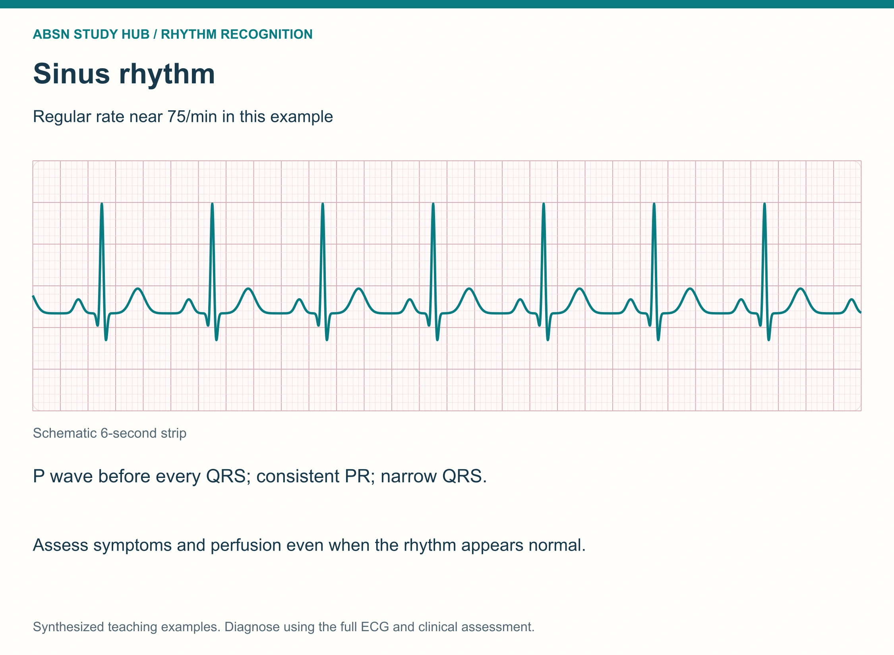
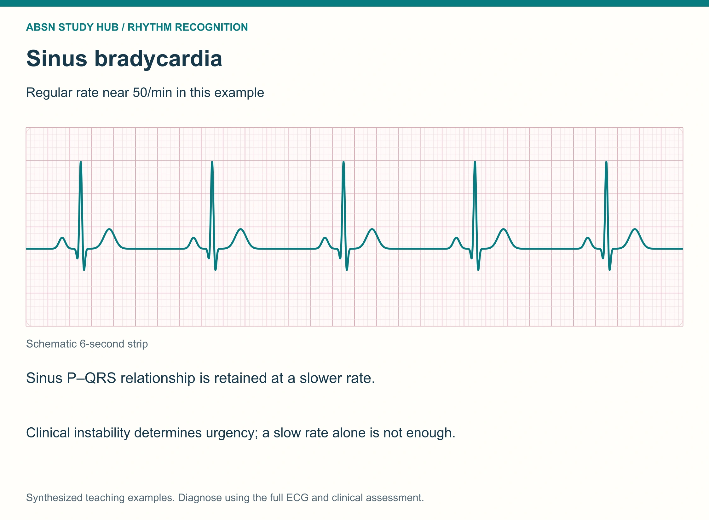
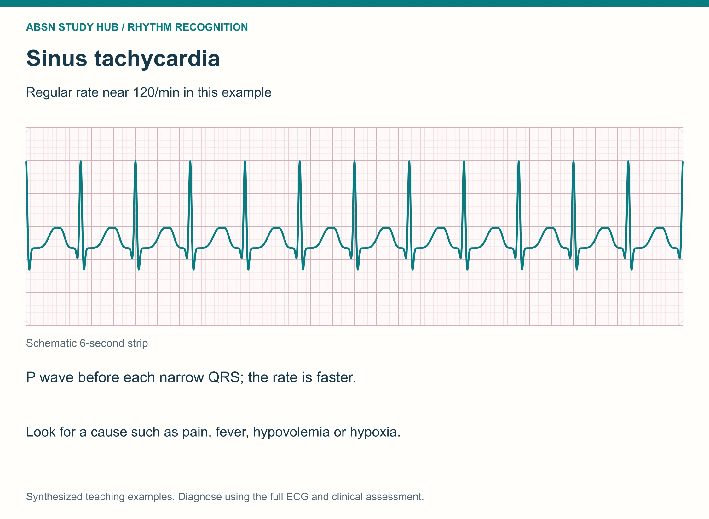
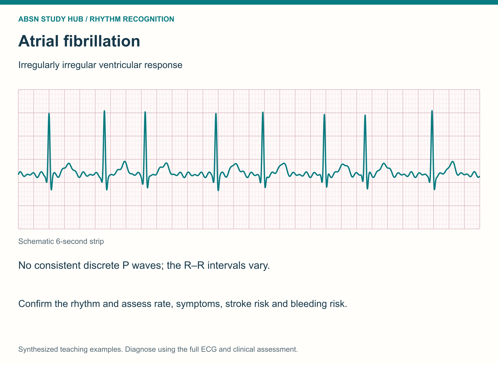
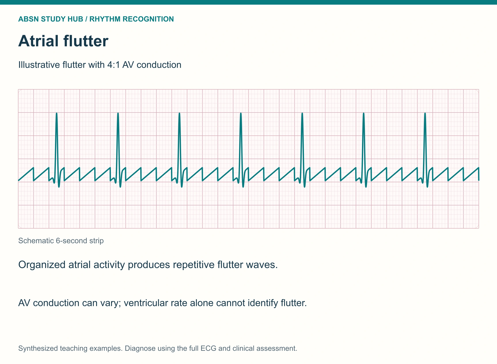
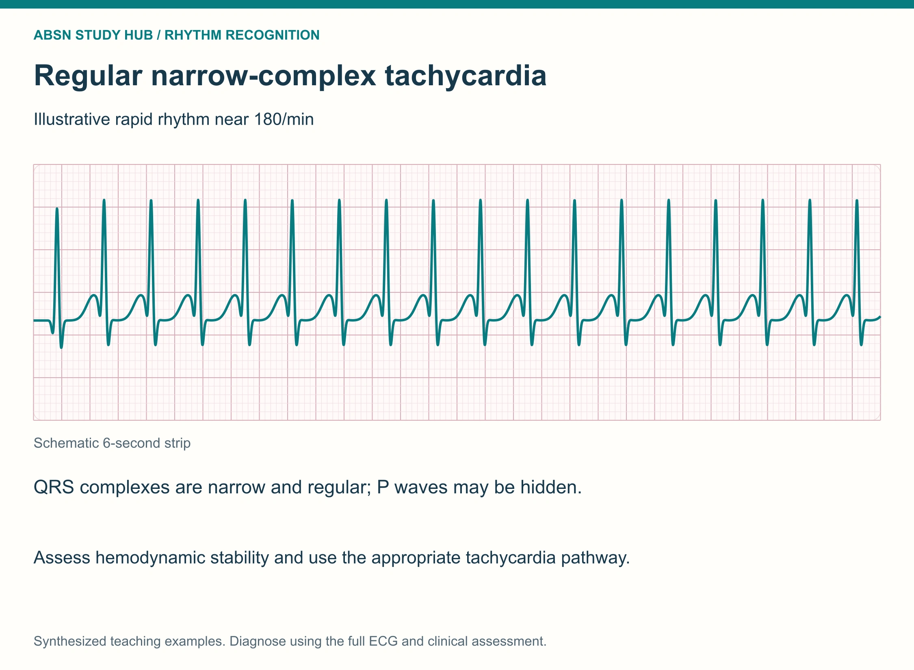
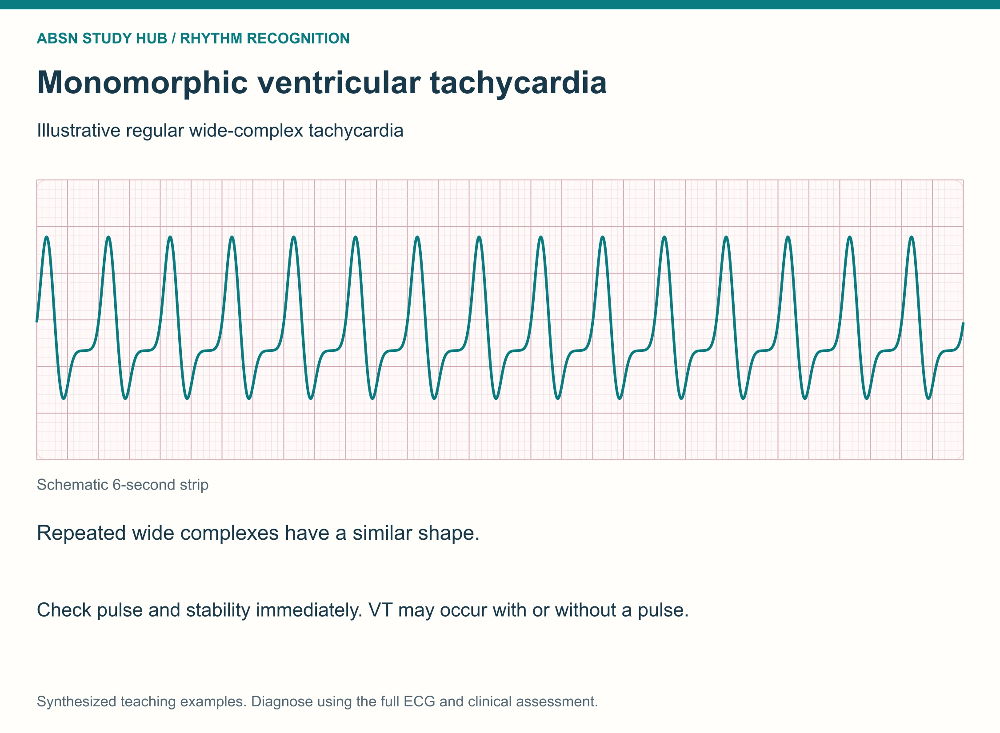
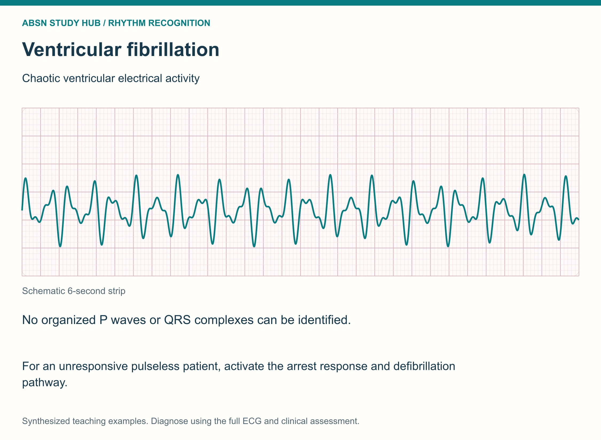
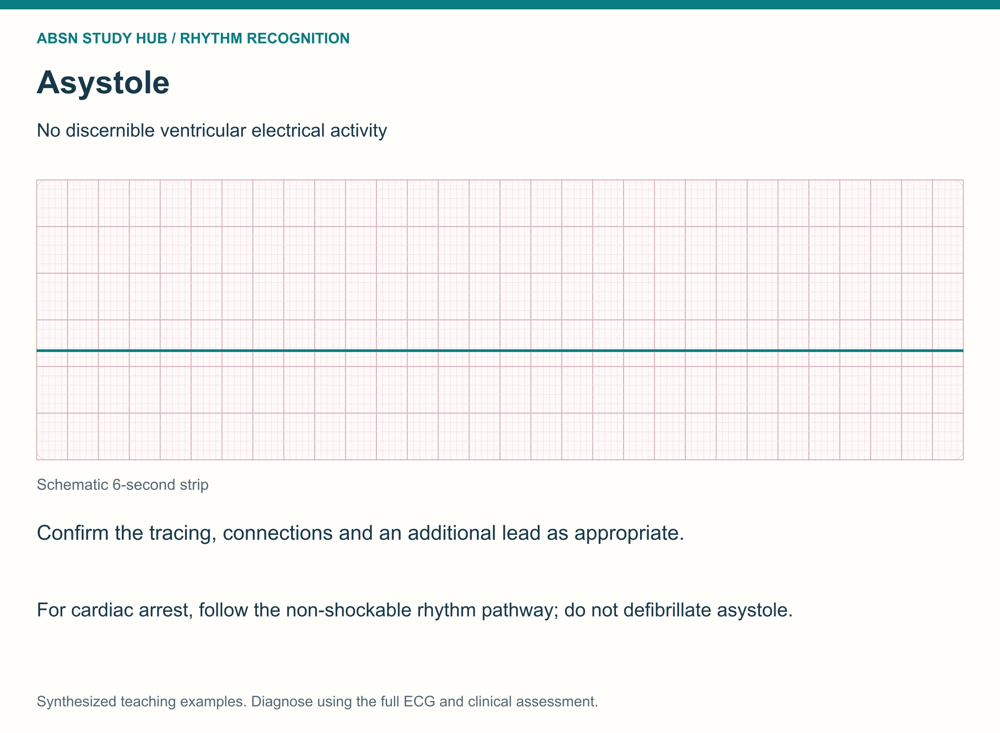

Recognize them in three seconds · then say the priority out loud
The NCLEX does not ask you to read a 12-lead. It shows you one rhythm strip and asks what is it and what do you do first. Nine rhythms cover almost every one of those questions. This page teaches the look of each one and the single distinguishing feature that separates it from its look-alike. For the systematic step-by-step method, pair this with NG-011 · 5-Step EKG Interpretation — that page is the how, this page is the what.
📄 Simple Nursing original — opens in Drive →
Before you memorize nine pictures, learn the four questions that generate the answer.









Most telemetry paper marks 3-second intervals at the top. Two of those marks = 6 seconds.
All three have a P wave before every QRS and are regular. The only thing that changes is the rate.
| P wave | Regular? | Rate | QRS |
|---|---|---|---|
| Yes — one before every QRS, all the same shape | Yes — R–R spacing is identical | 60–100 | Narrow < 0.12 s |
PR interval 0.12–0.20 s and constant. Learn this strip cold — every other rhythm is described as how it differs from this one.
The distinguishing feature: P before every QRS, regular, rate under 60. Nothing is missing — there is just more space between the beats.
Causes: athletic conditioning · sleep · vagal stimulation (bearing down, vomiting, suctioning) · inferior-wall MI · hypothyroidism · hypothermia · increased intracranial pressure · drugs (beta blockers, calcium channel blockers, digoxin).
What you do:
The distinguishing feature: P before every QRS, regular, rate over 100 (usually 100–150). At very fast rates the P wave starts to hide in the previous T wave — that is the boundary with SVT.
Causes: fever · pain · anxiety · hypovolemia / hemorrhage · hypoxia · anemia · dehydration · sepsis · hyperthyroidism · heart failure · caffeine, nicotine, decongestants, cocaine, amphetamines.
What you do: treat the CAUSE.
Do not slow a compensatory tachycardia with a beta blocker. A bleeding client's fast heart rate is the only thing keeping the blood pressure up.
| Rhythm | P wave | Regular | Rate | First move |
|---|---|---|---|---|
| Normal sinus | Yes | Yes | 60–100 | Nothing — this is the goal |
| Sinus bradycardia | Yes | Yes | < 60 | Assess symptoms → atropine if symptomatic |
| Sinus tachycardia | Yes | Yes | > 100 | Find and fix the cause |
Now the P wave changes or disappears — and clots become the story.
The distinguishing feature: there is no discrete P wave anywhere — the baseline is a chaotic wavy line — and the R–R spacing never repeats. The atria are quivering at 350–600 times a minute; the AV node lets random beats through.
The distinguishing feature: instead of a chaotic baseline you get identical, repeating sawtooth "F waves" — one signal racing around a fixed circuit in the right atrium at about 250–350 per minute.
A-fib vs A-flutter in one line:
| A-Fib | A-Flutter |
|---|---|
| Baseline is chaotic and wavy | Baseline is a repeating sawtooth |
| Irregularly irregular | Often regular (fixed ratio) |
| No two waves look alike | Every F wave is identical |
The distinguishing feature: narrow QRS, perfectly regular, 150–250 bpm, and you cannot find a P wave — it is buried inside the preceding T wave. It starts and stops abruptly.
Causes: stimulants (caffeine, energy drinks, decongestants, cocaine) · strenuous exercise · hypoxia · fever · anxiety · underlying heart disease.
Narrow is the good news: a narrow QRS proves the impulse traveled down the normal conduction pathway — the problem is above the ventricles.
Treatment, in order:
Stop reading the monitor and touch the client. These three are decided by one finding: is there a pulse?
The distinguishing feature: a run of wide, bizarre, identical complexes marching regularly at 100–250. Three or more consecutive PVCs is V-Tach.
Causes: MI / ischemia · cardiomyopathy · low K⁺ · low Mg²⁺ · QT-prolonging drugs · hypoxia · acidosis.
Assessment: may be alert and talking, or pulseless within seconds. The pulse decides the treatment.
Treatment splits three ways:
The distinguishing feature: there is no identifiable QRS at all — just an irregular, wandering squiggle. The ventricles are quivering, not pumping. Coarse V-Fib has large deflections; fine V-Fib is low-amplitude and can be mistaken for asystole.
The distinguishing feature: a nearly flat line with only a faint drift — no P waves, no QRS, no electrical activity at all.
Before you believe it — confirm it:
Treatment:
Polymorphic V-Tach whose amplitude twists around the baseline — the "Tornado Pointes". Causes: post-MI · hypoxia · low magnesium · low potassium · QT-prolonging drugs.
Treatment: IV magnesium sulfate — Magnesium Mellows out the heart. If it becomes pulseless, defibrillate.
| # | Rhythm | P wave | Regular | Rate | QRS | First action |
|---|---|---|---|---|---|---|
| 1 | Normal sinus | Yes | Yes | 60–100 | Narrow | Nothing |
| 2 | Sinus bradycardia | Yes | Yes | < 60 | Narrow | Symptoms? → atropine, pacing |
| 3 | Sinus tachycardia | Yes | Yes | > 100 | Narrow | Treat the cause |
| 4 | Atrial fibrillation | None — wavy baseline | Irregularly irregular | Varies | Narrow | Rate control + anticoagulate |
| 5 | Atrial flutter | Sawtooth F waves | Often regular | Atrial 250–350 | Narrow | Rate control + anticoagulate |
| 6 | SVT | Hidden in the T | Yes | 150–250 | Narrow | Vagal → adenosine → cardiovert |
| 7 | V-Tach | None | Yes | 100–250 | WIDE | Check pulse → defib or cardiovert |
| 8 | V-Fib | None | No — chaotic | Unmeasurable | No QRS | CPR + DEFIBRILLATE |
| 9 | Asystole | None | Flat | 0 | None | CPR + epinephrine — never shock |